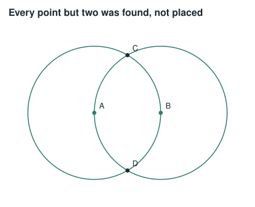

Constructive geometry · 01
The picture is not the proof
Exact arithmetic
Take three points on a line, with the first part 1.618 times the second. Is that a golden section? Every tool that answers by measuring its own drawing says yes. It is not, it is wrong in the fifth decimal place, and no amount of rendering more carefully will ever catch it.

A visual can render successfully and still be wrong
That sentence has been in this project's design notes since the beginning, and until now it meant one thing: a caption through an axis label, two formulas on the same spot, a curve leaving its frame. Those are defects of legibility. The checks that catch them measure boxes on a rendered frame, and they work.
There is a second way to be wrong, and none of those checks can see it. A construction can be perfectly legible — well spaced, correctly labelled, beautiful — and assert something false. Nothing about the pixels is out of place. The mathematics is.
Ask the usual question about the drawing above: is the vertical line the
perpendicular bisector of the base? You can measure it. You will get a
dot product of something like -2.2e-16, decide that is
close enough to zero, and be right — this time. Now ask whether a
section is golden, where the answer differs from the measurement in the
fifth decimal. The same method gives the same confident yes, and it is
wrong.
The field is not a choice
The way out is not to measure more precisely. It is to stop measuring.
Ruler and compass reach exactly the tower of quadratic extensions of the
rationals. A straightedge through two known points gives a linear
equation; a compass gives a quadratic one; and nothing either tool can do
escapes Q(√r₁)(√r₂)…(√rₙ). That is the classical theorem,
and it is why the cube cannot be doubled — a cube root has degree 3, and
every number reachable here has degree a power of two.
So the arithmetic of ruler-and-compass geometry is not an approximation
of that field. It is that field, and it can be implemented
exactly. An element at level k is a + b√gₖ with
a and b from the level below and rationals at
the bottom. Addition and multiplication are componentwise; division goes
through the conjugate; and sign — the part that matters — is decidable by
recursion:
sign(a + b√g), with g > 0 and therefore √g > 0:
a, b both ≥ 0 → positive
a, b both ≤ 0 → negative
opposite signs → compare a² against b²g, recursively
No tolerance appears anywhere in that path. is_zero is a
proof.
What the drawing above actually knows
Two points were given, A = (0, 0) and
B = (1, 0). Everything else came from crossing what was
already there:
A = 0, 0
B = 1, 0
( A B ) the circle on A through B
( B A ) the circle on B through A
[ C D ] the line through the two points those circles produced
[ A B ]
C and D were never named by anyone — they are
where the circles meet, and the model found them. So were E
and F on the base, and G where the two lines
cross. G is not approximately the midpoint of
AB; it is exactly (1/2, 0), and C
is exactly (1/2, √3/2). The whole construction costs the
field one generator: √3, and nothing else.

A construction that asserts something, and is refused when it lies
Once coordinates are exact, a figure can carry claims about itself, and they can be decided:
"claims": [
{"claim": "perpendicular", "of": ["[ C D ]", "[ A B ]"]},
{"claim": "midpoint", "of": ["G", "A", "B"]},
{"claim": "congruent", "of": [["A","B"], ["A","C"], ["B","C"]]}
]
Those three hold, so the figure renders — it is the one at the top of
this page, and it was produced by the script that builds this site, with
the claims checked before a single element was drawn. Change
perpendicular to parallel and nothing is
drawn at all. A figure whose claim stops being true fails, rather than
producing a convincing picture of something false.
1.618
Which brings back the opening. A section is golden when the whole is to
the greater part as the greater is to the lesser. Written out that is
AB² = AC·BC, and squaring it gives
AB⁴ = AC²·BC² — an identity among squared lengths,
with no square root in it anywhere. The predicate is exact and costs the
field nothing.
Give it a section built on φ = (1+√5)/2 and it holds. Give
it one built on 1.618 and it does not. The two differ by about
3.4 × 10⁻⁵ — far above any floating-point epsilon, and far
below what a drawing can show you. Every checker that compares a measured
ratio against a tolerance calls the second one golden. This one calls it
what it is.
That is the entire claim of this lane. Not that the diagrams are prettier — that the ones which assert something have been made to prove it, and are refused when they cannot.